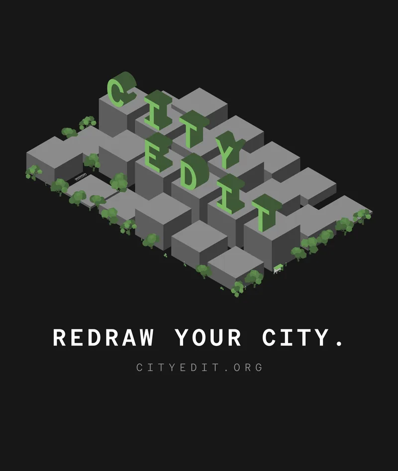
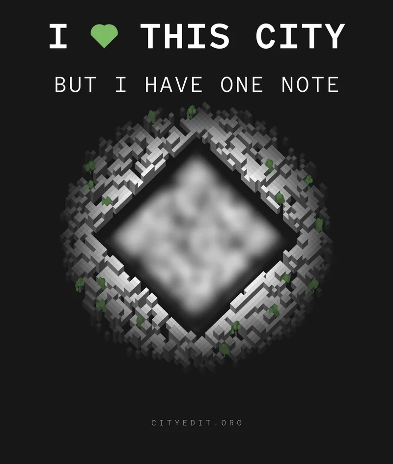

The City Edit shirt
Black tee, sizes S to XL

$45
Ships within the United States.
A black tee with the City Edit streetscape on the front. On the back: I love this city, but I have one note, over a code that belongs to your shirt alone.
Buy the shirtCheckout is handled by Stripe. Choose your size there, one size per order. Questions: eric@sphericalharmonics.org.
§1The code Scan it, pick a street, and the shirt remembers
Every shirt carries its own code on the back. Scan it with a phone camera and City Edit opens on the map.
The code starts out empty. The first vote cast through it ties the shirt to one proposal on one street, and every scan after that opens the same proposal. A poster stays on its corner; a shirt goes where you go.
§2The print Two inks on black
- GarmentBlack cotton tee, sizes S, M, L and XL.
- InkTwo spot colours, green and white; the garment supplies the black.
- Artwork11 × 13 inches, printed at the same size on every garment.
- CodeUnique to each shirt; printed on the back inside the block city.